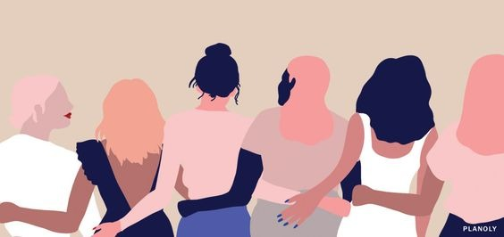

Sobre o site
O desenvolvimento desse site foi pensado baseando-se nos relatos de assédio sofrido por mulheres na sua convivência em sociedade,visando amenizar quaisquer problemas relacionados a todo tipo de assédio. Também com o intuito de proporcionar apoio umas as outras, apresentando um local onde podem se sentir confortável para ler e relatar seus depoimentos anonimamente ou não.
É importante entender o assédio, entender onde e como se apresenta e conhecer seus direitos como mulher, para que, se vier a passar por uma situação desagradável esteja ciente de seus respectivos direitos e compreenda que não estará sozinha.

O nosso site será usado como uma ferramenta a mais que vem para somar com projetos como o mete a colher(https://meteacolher.org/) ou até mesmo o papel desempenhado pela delegacia da mulher, para ser mais uma plataforma de colaboração na denúncia e no diálogo entre mulheres que enfrentam essas situações em diversos lugares e buscam um meio para relatar sobre o ocorrido e buscar ajuda psicológica e judiciária, que será disponibilizada na nossa plataforma profissionais destes ramos que se propuseram a participar desta iniciativa.
Nos baseamos em pesquisas realizadas com mulheres para validar a importância de um ambiente adequado para relatarem suas experiências e seu convívio social da forma mais segura e privada, e com base nas respostas adquiridas construímos nosso site.